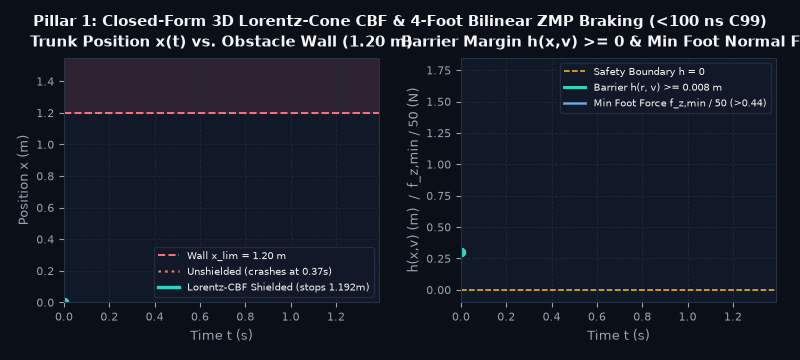
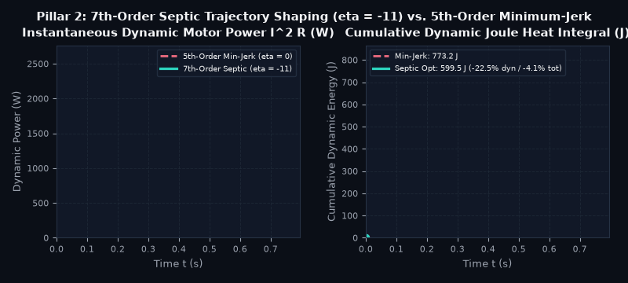
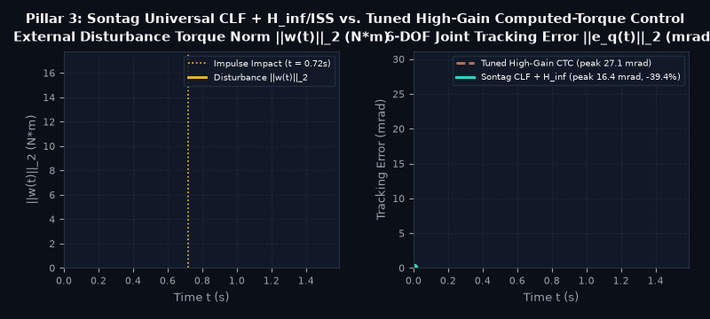
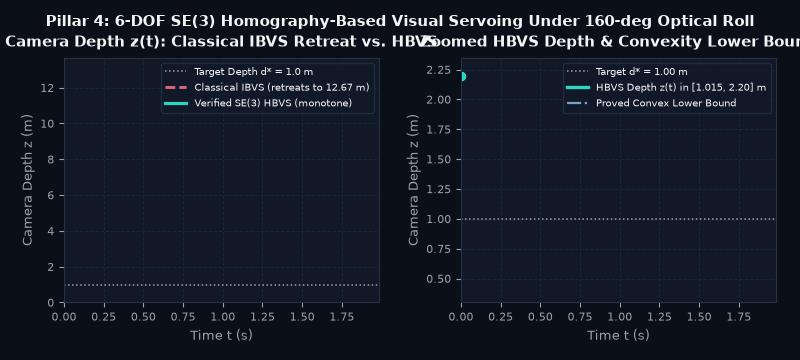

Public Lean 4 Library · Research Runtime and Simulation Examples
ctrl — Build Controllers on Checked Mathematics
ctrl helps you reason about tracking error, braking limits, motion energy, estimation, and camera control. This public checkout provides Lean 4 statements and proofs. The examples below also describe Python, C99, PLC Structured Text, and MuJoCo work from a separate research checkout; those runtime artifacts are not yet shipped here. Start with one model that matches your system, reproduce its evidence, and check the implementation and physical assumptions before deployment.
1. Four Problems You Can Investigate
These saved animations illustrate reported MuJoCo 3.16.0 research runs, not live execution or hardware validation. Their runtime sources and exact reproduction environment are not included in this public checkout. Each result belongs to its stated model, task and baseline; it is not an expected improvement on every robot. See the adoption guide for what is available and what still needs integration.
Pillar I · Legged & Mobile Safety Control (LorentzConeCBF.lean + CentroidalDecelerationLimit.lean)
Check Braking Limits Without an Online Optimizer
The problem: Braking can cause contact slip or tipping. A useful controller needs an explicit relationship between friction, support geometry, center-of-mass height and allowed acceleration. General optimization handles broader constraints; the closed-form result here applies to a particular four-contact model.
What this provides: Under the theorem's contact and geometry assumptions, a_max = min(μ, W/h_G) * g characterizes the modeled deceleration limit. A four-contact allocator satisfies the stated force and zero-net-torque equations. It avoids an iterative optimizer for this model; it does not establish equivalence to every SOCP formulation, physical stopping safety, or a PLC execution-time bound. Integration: supply conservative friction and geometry, an admissible backup command, measured delay and actuator limits, then validate contact behavior and the generated code on your target.

MuJoCo 3.16.0 rollout (run_quadruped_zmp_cbf_benchmark): 40 kg trunk at 3.0 m/s stops in the reported simulation at 1.192 m < 1.20 m wall, f_z,min = 22.14 N > 0, pitch/roll rate 1.64e-15 rad/s.
Pillar II · Industrial Manipulator Motion Planning (RobotEnergySmoothness.lean)
Compare Motion Profiles by Modeled Energy
The problem: Minimizing jerk does not necessarily minimize electrical energy. A fair comparison needs the same displacement, duration, payload and boundary conditions, with motor losses and actuator limits stated explicitly.
What this provides: Exact integrals reduce the declared trajectory-family loss model to a quadratic in η. The value η = −11 minimizes its inertial Joule term; the optimum for combined losses depends on hardware parameters. The reported 6-DOF MuJoCo comparison found 4.1% less total modeled motor I2R loss, 10.8% less modeled viscous loss, and 22.5% less dynamic modeled Joule loss. The separate 1D inertial model gives 18.33%. These are different measurements, not a universal improvement range or a winding-temperature measurement. Integration: match drive losses, gravity, regeneration, current/voltage limits and tracking; rerun the same task before choosing the parameter.

MuJoCo 3.16.0 6-DOF RNE rollout (run_arm6dof_septic_energy_benchmark): Septic (η = −11) trims peak dynamic power and cuts modeled dynamic Joule loss from 773.2 J to 599.5 J.
Reduce Tracking Error Under a Declared Disturbance
Domain problem: Contact-rich manipulation (deburring, insertion, payload handoff) subjects robot joints to sudden impulsive torque spikes on top of multi-frequency vibration. A fixed-gain linear Computed-Torque Controller (CTC) must trade off steady-state noise amplification against peak excursion during a transient impact.
What this provides: CLF feedback, disturbance-gain bounds and invariant error sets provide components for comparing tracking controllers. In the reported MuJoCo torque-impulse experiment, the candidate reduced peak joint error by 39.4% (27.1 mrad → 16.4 mrad) and RMS error by 39.6% against the documented matched-pole CTC baseline (Kp = 416, Kd = 42, plus sliding damping). This is one modeled comparison, not proof that these modules compose into a better controller for every plant. Integration: identify dynamics and disturbance bounds, preserve sampling assumptions, tune a credible baseline, and include saturation and sensor noise.

MuJoCo 3.16.0 6-DOF rollout (run_arm6dof_disturbance_iss_hinf_benchmark): Sontag CLF + H∞ cuts impulse peak error by 39.4% vs. matched-pole high-gain Computed-Torque Control.
The problem: Some image-based visual-servo trajectories produce large camera retreat during optical-axis rotation. This example studies a specific planar-scene and camera-control model, rather than all visual-servo systems.
What this provides: Homography results and positive-depth tests support pose reasoning, while log-depth feedback ḋ = −λ d ln(d/d*) separates the modeled depth response from optical-axis roll. The reported MuJoCo run kept depth inside [1.015 m, 2.200 m], compared with 12.67 m retreat for its IBVS baseline. Integration: calibrate the camera, validate the scene and correspondence assumptions, handle ambiguous or degenerate geometry, and check field of view, workspace and actuator limits. The result does not prove a detector, complete pose solver or collision-free robot implementation.

MuJoCo 3.16.0 6-DOF camera rollout (run_se3_visual_servoing_benchmark): Log-depth HBVS stays strictly inside [1.015 m, 2.20 m] and above its proved convex lower bound.
2. Walkthrough: From a Model Theorem to a Tested Kernel
Step 1 · Lean 4 Proof Over ℝ (LorentzConeCBF.lean)
We prove in Lean 4 (0 sorry) that setting the maximum deceleration to a_max = min(μ, W/h_G) * g and distributing ground forces across the 4 feet via a bilinear Zero-Moment-Point (ZMP) + proportional shear law satisfies:
theorem quad_contact_zero_angular_momentum (p : QuadParams) (ax ay : ℝ) :
netEulerTorque p (quadContactForce p ax ay) = 0
theorem quad_contact_in_lorentz_cone (p : QuadParams) (ax ay : ℝ)
(h_accel : ax^2 + ay^2 ≤ (safeDecelMax p)^2) :
∀ corner, inLorentzCone p.mu (quadContactForce p ax ay corner)
Step 2 · Zero-Heap C99 / PLC Kernel (codegen.py)
The research implementation expresses a convex-interpolation rule between a nominal command and a backup. The example below has a fixed three-component loop and no iterative solver or dynamic allocation. Its model requires an admissible backup and valid inputs; returning the backup is not itself proof that those requirements hold. Target timing, floating-point error and PLC behavior need separate verification. This is an illustrative research kernel, not formal code extraction from Lean:
What connects the theorem and implementation:
The separate research checkout associates Python functions with Lean declarations and tests selected formulas using exact rational inputs or float64, as appropriate. Its reported C99 differential checks found a maximum absolute discrepancy of 8.88 × 10−16 against the tested Python reference. Finite tests do not prove general program equivalence; an absolute error is not a universal ULP bound. The public theorem library, runtime implementation, compiler and physical plant are separate evidence layers.
3. What Is Formally Proved vs. What Is Empirically Tested
Formal verification in control theory has a well-known gap between continuous real-number proofs and floating-point physics execution. These layers carry different evidence and adoption requirements:
Layer
Artifact & Availability
What the Evidence Establishes
What Is Not Proved in Lean
1. Lean theorem library
Public ControlsLean/; imports and headline audit are versioned in the repository.
Checked mathematical implications under their stated hypotheses. Run scripts/check.sh for the current build, escape-hatch and axiom audit.
Does not by itself establish sensor accuracy, floating-point behavior, compiler correctness or hardware conformance.
2. Research Python references
Separate research checkout: 48 registered functions = 42 domain functions + 4 benchmarks + 2 code-generation helpers. Not shipped on this public branch.
Declaration-name/source audits and finite exact or numerical tests provide traceability and regression evidence.
A decorator or matching theorem name is not a proof that Python implements the theorem.
3. Research C99 / Structured Text generation
Selected generated kernels; availability and reproduction steps belong to the runtime release.
Reported compiled-C differential checks compare selected outputs with Python. The displayed kernel uses fixed-size work and no dynamic allocation.
No general C/Python equivalence, IEC compiler validation, worst-case execution time or PLC safety acceptance follows.
4. Recorded MuJoCo examples
Four saved research simulations and animations.
Observed outcomes for the configured model, integration settings, tasks and baselines.
Simulator outcomes do not validate unmodeled hardware, thermal behavior, all disturbances or a complete safety case.
4. Combine Components Around a Measurable Goal
These are integration proposals, not proved end-to-end stacks. Check shared plant, timing, uncertainty and actuator assumptions before composing them. Measure each benefit against the same task; energy, tracking error and latency percentages cannot simply be added. Choose an adoption path.
Combination A · Industrial 6-DOF Manipulators
Lower Modeled Motion Losses While Tracking the Reference
Components:RobotEnergySmoothness.lean, ManipulatorTracking.lean, BacksteppingCLF.lean and BoundedRealHInf.lean. Connection to test: Choose a loss-aware reference, then track it with a controller that tolerates the declared disturbances. Work required: reconcile continuous/discrete assumptions, identify motor and rigid-body parameters, enforce actuator limits, and measure combined tracking and electrical loss. Less modeled Joule loss does not establish less vibration or lower temperature.
Combination B · Legged & Wheeled Mobile Robots
Make Braking Decisions Fit the Available Response Time
Components: braking limits, contact-force allocation, execution timing and backup switching. Connection to test: Account for detection, computation and actuation delay before the remaining stopping margin is lost. Work required: validate the contact model, backup authority, scheduling bounds and failure response on the target. An algebraic law does not guarantee deterministic physical timing or replace an application safety assessment.
Combination C · Eye-in-Hand Visual Inspection & Docking
Move the Camera Without Unwanted Depth Retreat
Components: planar geometry, positive-depth branch tests, estimation and depth feedback. Connection to test: Feed a validated pose estimate into a controller with an explicit depth objective. Work required: handle calibration error, correspondence outliers, ambiguity, visibility and actuator limits. A Kalman model or positive-depth test alone does not certify the true pose, complete branch coverage or workspace safety.
Combination D · Minimal-Sensor Embedded Estimation & Control
Bound Estimation and Tracking Error With Limited Sensors
Components: detectable LQR/Kalman results, information-form updates and disturbance bounds. Connection to test: Reuse a matched plant and measurement model to derive a controller, estimator and error envelope. Work required: establish detectability, covariance/disturbance assumptions, units and sampling; test missed measurements and model mismatch. The individual proofs do not establish the composed deployment automatically.
5. Find a Mathematical Component
This catalog groups 14 research families. It does not count Python functions or certify deployment readiness. “Documented results” groups mathematical results described in the public and research libraries; source availability, runtime and system integration vary by family. See the availability and adoption guide.
Status:
Domain:
6. What's Still In Work & Community Mathlib / Formal-Conjectures Contributions
In Work · Robotics Runtime
1. C99 / MuJoCo Payload-Adaptation Binding for Slotine–Li & POMDPs
ManipulatorTracking.lean (Slotine–Li passivity and adaptive regressor cancellation) and POMDPBelief.lean (Smallwood–Sondik piecewise-linear convex Bellman backups) are proved in Lean 4 on main, Their runtime integration is research work; the Python/C99/MuJoCo implementation is not included in this public checkout. See the adoption guide for release gaps.
In Work · Lyapunov Conditioning (MF-13)
2. Symmetric vs. Skew Lyapunov Conditioning (Byers–Nash n=6)
For the continuous Lyapunov operator ℒA(X) = A⊤X + XA, Byers and Nash asked whether the minimum singular value on skew matrices k(A) is always ≤ the minimum singular value on symmetric matrices s(A). Its control motivation concerns matrix-operator conditioning; no practical SDP solver improvement is established here. We formalized orthogonal decoupling on 𝕊n ⊕ 𝕂n, unconditional exclusion for rank ≤ 4, and a 15D Parseval decomposition of 𝕂6, plus exact rational LDL⊤ ≻ 0 certificates on a 10-pair non-Common-T grid. Bounding the remaining 3D commuting off-diagonal cross-term analytically is in work.
Community Service: Formalizing Published Solutions for DeepMind's formal-conjectures
Alongside the control and robotics library, we contribute Lean 4 formalizations of already-solved mathematical problems, published counterexamples, and elementary sub-cases from Google DeepMind's formal-conjectures repository. These are community formalizations of theorems proved by other mathematicians in the literature (not claims of solving open Erdős problems):
Lean 4 formalizations of Borwein & Loring's (1990) identity for #261; Li's 3-uniform hypergraph coloring for #834; Tijdeman's symmetric k1=k2=3 counterexample for #931; and elementary special cases / sub-variants from the formal-conjectures backlog.
Lean 4 formalizations of Steiner's published elementary proof of #370 (erdos_370), the 2-coloring arithmetic progression bound d ≤ 47 for #645 (erdos_645), the k=2 identity for #493, and the 2r congruential sharpness bound for #275.
Lean 4 formalizations of the variants.weaker reduction for #1148 (above explicit threshold n > 6563), the discrete convexity quadratic lower bound for #455, the k ≤ 2 sub-case of #367, and lower-bound sub-parts of #1179, #1187, and #311.